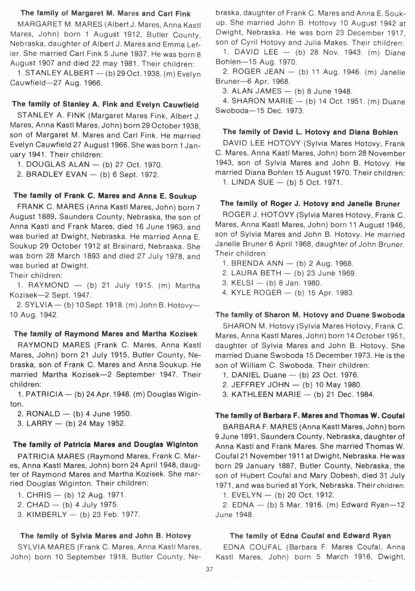

The book · The Family of John Kastl
Page 37 The family of Margaret M. Mares and Carl Fink


Transcription
The family of Margaret M. Mares and Carl Fink
MARGARET M. MARES (Albert J. Mares, Anna Kastl Mares, John) born 1 August 1912, Butler County, Nebraska, daughter of Albert J. Mares and Emma Lefler. She married Carl Fink 5 June 1937. He was born 8 August 1907 and died 22 may 1981. Their children:
- STANLEY ALBERT — (b) 29 Oct. 1938. (m) Evelyn Cauwfield—27 Aug. 1966.
The family of Stanley A. Fink and Evelyn Cauwfield
STANLEY A. FINK (Margaret Mares Fink, Albert J. Mares, Anna Kastl Mares, John) born 29 October 1938, son of Margaret M. Mares and Carl Fink. He married Evelyn Cauwfield 27 August 1966. She was born 1 January 1941. Their children:
- DOUGLAS ALAN — (b) 27 Oct. 1970.
- BRADLEY EVAN — (b) 6 Sept. 1972.
The family of Frank C. Mares and Anna E. Soukup
FRANK C. MARES (Anna Kastl Mares, John) born 7 August 1889, Saunders County, Nebraska, the son of Anna Kastl and Frank Mares, died 16 June 1963, and was buried at Dwight, Nebraska. He married Anna E. Soukup 29 October 1912 at Brainard, Nebraska. She was born 28 March 1893 and died 27 July 1978, and was buried at Dwight. Their children:
- RAYMOND — (b) 21 July 1915. (m) Martha Kozisek—2 Sept. 1947.
- SYLVIA — (b) 10 Sept. 1918. (m) John B. Hotovy—10 Aug. 1942.
The family of Raymond Mares and Martha Kozisek
RAYMOND MARES (Frank C. Mares, Anna Kastl Mares, John) born 21 July 1915, Butler County, Nebraska, son of Frank C. Mares and Anna Soukup. He married Martha Kozisek—2 September 1947. Their children:
- PATRICIA — (b) 24 Apr. 1948. (m) Douglas Wiginton.
- RONALD — (b) 4 June 1950.
- LARRY — (b) 24 May 1952.
The family of Patricia Mares and Douglas Wiginton
PATRICIA MARES (Raymond Mares, Frank C. Mares, Anna Kastl Mares, John) born 24 April 1948, daugter of Raymond Mares and Martha Kozisek. She married Douglas Wiginton. Their children:
- CHRIS — (b) 12 Aug. 1971.
- CHAD — (b) 4 July 1975.
- KIMBERLY — (b) 23 Feb. 1977.
The family of Sylvia Mares and John B. Hotovy
SYLVIA MARES (Frank C. Mares, Anna Kastl Mares, John) born 10 September 1918, Butler County, Nebraska, daughter of Frank C. Mares and Anna E. Soukup. She married John B. Hottovy 10 August 1942 at Dwight, Nebraska. He was born 23 December 1917, son of Cyril Hotovy and Julia Makes. Their children:
- DAVID LEE — (b) 28 Nov. 1943. (m) Diane Bohlen—15 Aug. 1970.
- ROGER JEAN — (b) 11 Aug. 1946. (m) Janelle Bruner—6 Apr. 1968.
- ALAN JAMES — (b) 8 June 1948.
- SHARON MARIE — (b) 14 Oct. 1951. (m) Duane Swoboda—15 Dec. 1973.
The family of David L. Hotovy and Diana Bohlen
DAVID LEE HOTOVY (Sylvia Mares Hotovy, Frank C. Mares, Anna Kastl Mares, John) born 28 November 1943, son of Sylvia Mares and John B. Hotovy. He married Diana Bohlen 15 August 1970. Their children:
- LINDA SUE — (b) 5 Oct. 1971.
The family of Roger J. Hotovy and Janelle Bruner
ROGER J. HOTOVY (Sylvia Mares Hotovy, Frank C. Mares, Anna Kastl Mares, John) born 11 August 1946, son of Sylvia Mares and John B. Hotovy. He married Janelle Bruner 6 April 1968, daughter of John Bruner. Their children:
- BRENDA ANN — (b) 2 Aug. 1968.
- LAURA BETH — (b) 23 June 1969.
- KELSI — (b) 8 Jan. 1980.
- KYLE ROGER — (b) 15 Apr. 1983.
The family of Sharon M. Hotovy and Duane Swoboda
SHARON M. Hotovy (Sylvia Mares Hotovy, Frank C. Mares, Anna Kastl Mares, John) born 14 October 1951, daughter of Sylvia Mares and John B. Hotovy. She married Duane Swoboda 15 December 1973. He is the son of William C. Swoboda. Their children:
- DANIEL Duane — (b) 23 Oct. 1976.
- JEFFREY JOHN — (b) 10 May 1980.
- KATHLEEN MARIE — (b) 21 Dec. 1984.
The family of Barbara F. Mares and Thomas W. Coufal
BARBARA F. MARES (Anna Kastl Mares, John) born 9 June 1891, Saunders County, Nebraska, daughter of Anna Kastl and Frank Mares. She married Thomas W. Coufal 21 November 1911 at Dwight, Nebraska. He was born 29 January 1887, Butler County, Nebraska, the son of Hubert Coufal and Mary Dobesh, died 31 July 1971, and was buried at York, Nebraska. Their children:
- EVELYN — (b) 20 Oct. 1912.
- EDNA — (b) 5 Mar. 1916. (m) Edward Ryan—12 June 1948.
The family of Edna Coufal and Edward Ryan
EDNA COUFAL (Barbara F. Mares Coufal, Anna Kastl Mares, John) born 5 March 1916, Dwight,
People from the line of descent on this page
- Frank Charles Mares 1889–1963
- Barbara Frances Mares b. 1891
- Margaret M. Mares b. 1912
- Carl Fink 1907–1981
- Stanley Albert Fink b. 1938
- Evelyn Cauwfield b. 1941
- Douglas Alan Fink b. 1970
- Bradley Evan Fink b. 1972
- Anna E. Soukup 1893–1978
- Raymond Mares b. 1915
- Sylvia Mares b. 1918
- Patricia Mares b. 1948
- Ronald Mares b. 1950
- Larry Mares b. 1952
- Chris Wiginton b. 1971
- Chad Wiginton b. 1975
- Kimberly Wiginton b. 1977
- John B. Hotovy b. 1917
- David Lee Hotovy b. 1943
- Roger Jean Hotovy b. 1946
- Alan James Hotovy b. 1948
- Sharon Marie Hotovy b. 1951
- Diana Bohlen
- Linda Sue Hotovy b. 1971
- Janelle Bruner
- Brenda Ann Hotovy b. 1968
- Laura Beth Hotovy b. 1969
- Kelsi Hotovy b. 1980
- Kyle Roger Hotovy b. 1983
- Duane Swoboda
- Daniel Duane Swoboda b. 1976
- Jeffrey John Swoboda b. 1980
- Kathleen Marie Swoboda b. 1984
- Thomas W. Coufal 1887–1971
- Evelyn Coufal b. 1912
- Edna Coufal b. 1916
Transcriber’s notes
Two columns. The Sylvia Mares paragraph wraps from the bottom of the left column ('Ne-') to the top of the right column ('braska'). Name forms kept as printed: 'Hottovy' (once, in Sylvia's paragraph) vs 'Hotovy' elsewhere; 'Diane Bohlen' in child list vs 'Diana Bohlen' in heading/paragraph; 'SHARON M. Hotovy' (surname not in caps); 'DANIEL Duane' (mixed case); '22 may 1981' (lowercase); 'daugter' (print typo across a line break, 'daug-ter'); 'Martha Kozisek—2 September 1947' with dash in paragraph. Stray marks over 'June' (LAURA BETH) and in '31 July' and 'Feb.' are print blemishes. Edna Coufal paragraph runs on to next page.